“Eppur si muove!”
Galileo Galilei
1 | Curiosity
It all starts simply by wondering what’s out there, by feeling an internal drive to discover and understand. Looking at trees and wondering how they grow, looking at ants and wondering where they go. It might seem simple, but the act of making questions is of utter importance, and has had huge consequences for human societies. This is because it takes us closer to a truth beyond dogmas. Galileo knew it very well back in the 17th century. It was by feeling curious about the night sky and looking at it, that he could confirm it was the Earth that moved around the sun, and not the way around. This was an objective truth, that remains real above any human myth or belief. Something he knew very well; no matter what the inquisition made him say, still he knew that, “yet, it (the Earth) moves”.